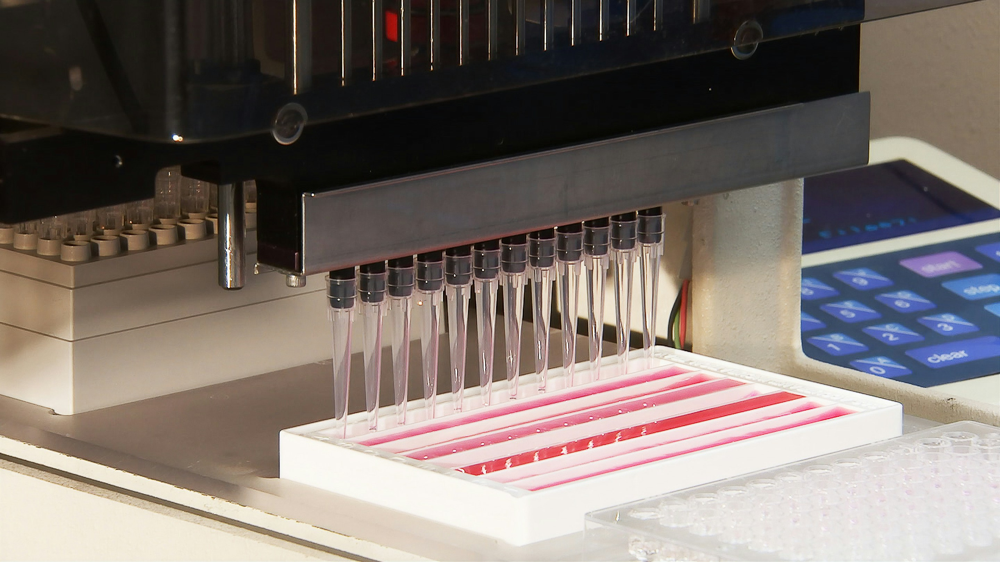

분석 의뢰의 전 주기를 단일 플랫폼에서 투명하게 관리합니다.전담 컨설턴트가 의뢰 등록부터 최종 보고서 수령까지 전 과정을 밀착 지원합니다.
OmicsPharm을 효과적으로 활용하여 연구 성과를 극대화하는 방법을 안내합니다.
클라이언트가 가장 많이 문의하는 내용을 모았습니다. 더 궁금한 점은 문의하기를 이용해 주세요.

유전체, 전사체, 단백체, 대사체 등 다양한 분석 의뢰를 지원하고,견적부터 프로젝트 관리까지 전문 컨설턴트가 함께합니다.